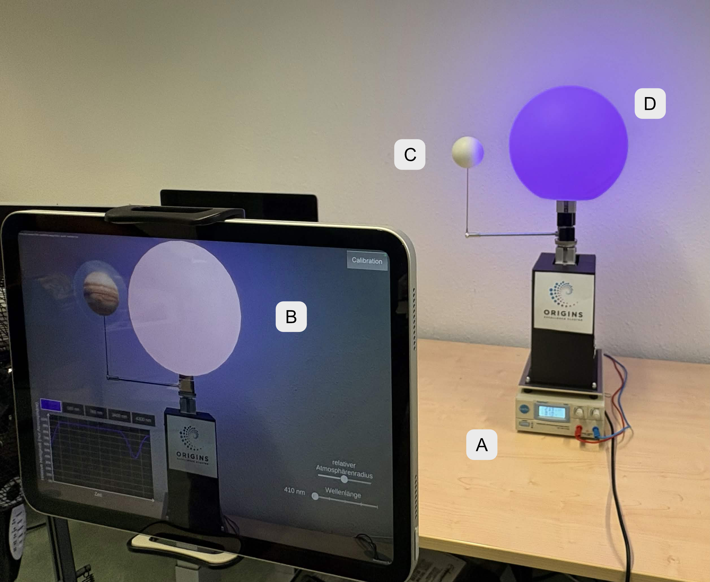
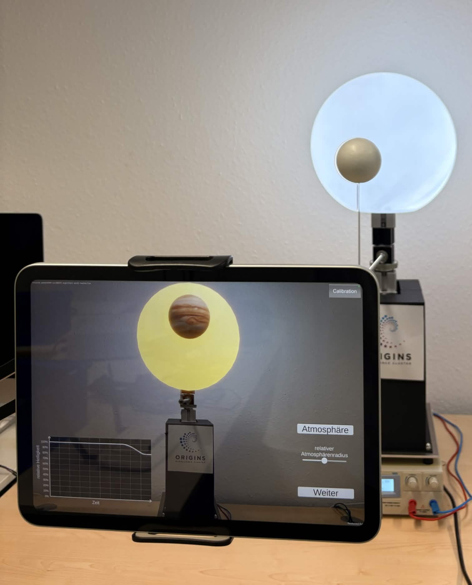
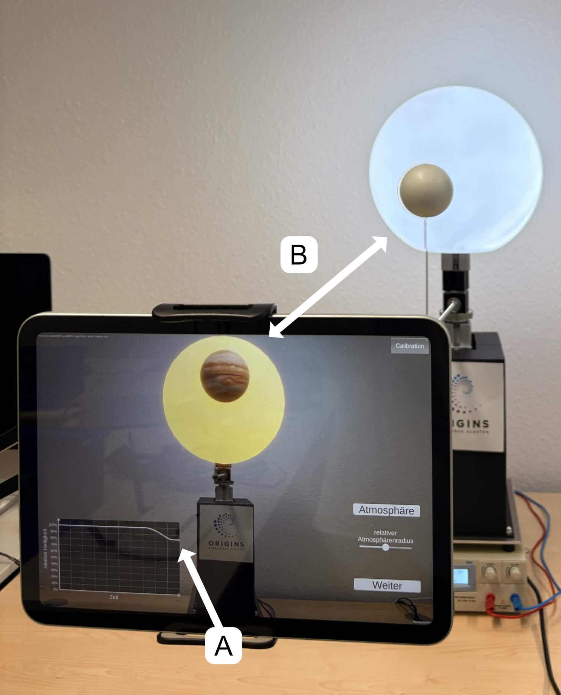

01 / AR + PHYSICS EDUCATION RESEARCH
Transit Method Setup

A star you can stand in front of, a planet that orbits it on a motor, and a light curve that dips at the exact moment the planet crosses.
THE PHYSICS
Most known exoplanets were found with the transit method. A transit happens when a planet passes between a star and its observer, and the star's brightness drops by a small amount. How much light is lost depends on the sizes of the star and the planet; how long the dip lasts depends on the planet's distance from its star. From those two numbers you can work back to the planet's size and orbital radius — which is remarkable, and almost impossible to feel from a light curve printed on a slide.
THE APPARATUS
- The star is a sphere with a Philips Hue light strip embedded inside it. The planet sits on a motorized rod that orbits it continuously, so students watch an orbit happen rather than imagine one.
- Closed-loop stepper motor control drives the rod, with a Python UDP server on a Raspberry Pi streaming live motor position out of the rig.
- Unity consumes that position stream, keeping the mechanical state of the model and its virtual overlay synchronized in real time.
- Custom motor mounts, drive adapters, and a control PCB, designed in SolidWorks and KiCad, fit the new hardware into the model the department already had.
THE AR LAYER
An iPad app built in Unity with AR Foundation and ARKit image tracking places a virtual star and planet over the physical objects. A graph in the bottom-left plots relative brightness against time, and as the planet moves between the viewer and the star, the curve dips — the measurement and the thing being measured in the same frame.
SPECTROSCOPY
The second phase moves from finding planets to reading their atmospheres. Students step the star through five wavelengths, and the Hue strip changes the physical star's color to match each one. Comparing how the absorption dip differs by wavelength is the core idea behind transmission spectroscopy — how the James Webb Space Telescope determines what an exoplanet's atmosphere is made of. In the final phase the app swaps in a specific planet and describes its atmosphere, and students compare absorption at the wavelengths its molecules absorb against those they don't.
WHERE IT'S GOING
The apparatus supports user studies with more than 30 student participants, evaluating how immersive tools affect physics learning outcomes. The next planned addition is an LLM chatbot, so students can ask their own questions about atmospheric composition inside the augmented environment rather than following a fixed script.
Written up with Raphael Cera, Christoph Hoyer, and Jochen Kuhn of the Faculty of Physics, LMU Munich. Funded by the German Research Foundation (DFG).
REFERENCE


